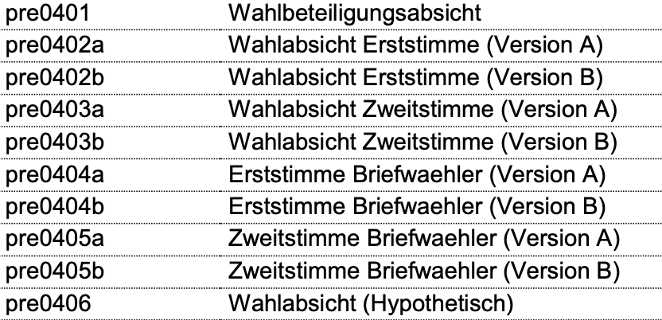
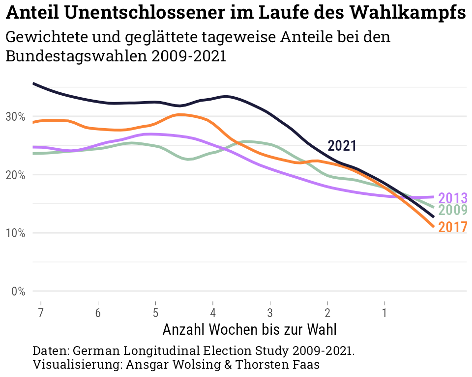
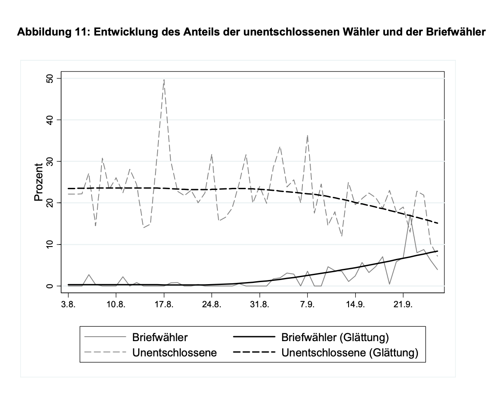
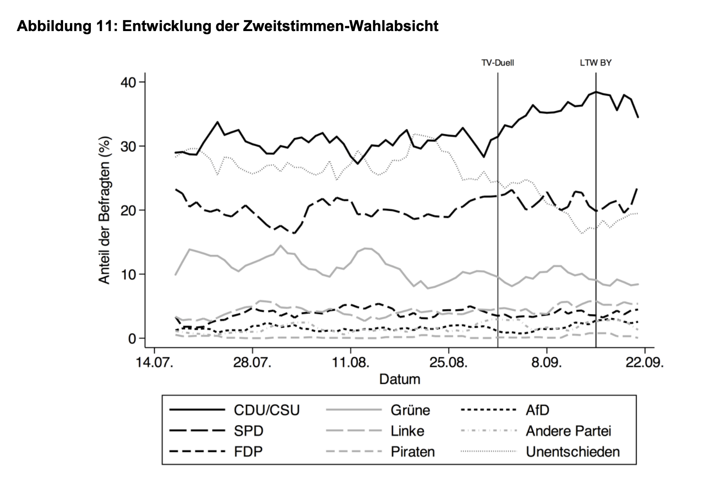

Code
library(tidyverse)
library(ggtext)
library(haven)
library(labelled)
library(gt)
library(gtsummary)
library(here)
knitr::opts_chunk$set(dev = "ragg_png")
source(here("R", "custom-theme.R"))
theme_set(theme_custom())library(tidyverse)
library(ggtext)
library(haven)
library(labelled)
library(gt)
library(gtsummary)
library(here)
knitr::opts_chunk$set(dev = "ragg_png")
source(here("R", "custom-theme.R"))
theme_set(theme_custom())df_2009_2017 <- read_dta(here("data", "RCS", "ZA6834_v1-0-0.dta"))
df_2021 <- read_dta(here("data", "RCS", "ZA7703_v2-0-0.dta"))
Die Variable year ermöglicht die Unterscheidung der Studien.
df_2009_2017 |>
select(year, pre0401, pre0403a, pre0403b) |>
mutate(across(c(pre0401, pre0403a, pre0403b),
function(x) to_factor(x, levels = "prefixed", drop_unused_labels = TRUE))) |>
tbl_summary(by = year)| Characteristic | 2009 N = 6,0081 |
2013 N = 7,8821 |
2017 N = 7,6501 |
|---|---|---|---|
| Wahlbeteiligungsabsicht | |||
| [-99] keine Angabe | 2 (<0.1%) | 5 (<0.1%) | 4 (<0.1%) |
| [-98] weiss nicht | 29 (0.5%) | 35 (0.4%) | 25 (0.3%) |
| [1] bestimmt zur Wahl gehen | 4,859 (81%) | 6,607 (84%) | 6,675 (87%) |
| [2] wahrscheinlich zur Wahl gehen | 432 (7.2%) | 542 (6.9%) | 349 (4.6%) |
| [3] vielleicht zur Wahl gehen | 194 (3.2%) | 210 (2.7%) | 142 (1.9%) |
| [4] wahrscheinlich nicht zur Wahl gehen | 134 (2.2%) | 130 (1.6%) | 68 (0.9%) |
| [5] bestimmt nicht zur Wahl gehen | 206 (3.4%) | 228 (2.9%) | 147 (1.9%) |
| [6] bereits Briefwahl gemacht | 152 (2.5%) | 125 (1.6%) | 240 (3.1%) |
| Wahlabsicht Zweitstimme (Version A) | |||
| [-99] keine Angabe | 464 (7.7%) | 523 (6.6%) | 617 (8.1%) |
| [-98] weiss nicht | 1,130 (19%) | 1,560 (20%) | 1,574 (21%) |
| [-97] trifft nicht zu | 523 (8.7%) | 523 (6.6%) | 484 (6.3%) |
| [-84] keine Erst-/Zweitstimme abgegeben | 49 (0.8%) | 10 (0.1%) | 14 (0.2%) |
| [-83] ungueltig waehlen | 0 (0%) | 27 (0.3%) | 11 (0.1%) |
| [1] CDU/CSU | 1,275 (21%) | 2,094 (27%) | 1,769 (23%) |
| [4] SPD | 885 (15%) | 1,392 (18%) | 1,156 (15%) |
| [5] FDP | 579 (9.6%) | 291 (3.7%) | 528 (6.9%) |
| [6] GRUENE | 610 (10%) | 854 (11%) | 609 (8.0%) |
| [7] DIE LINKE | 355 (5.9%) | 344 (4.4%) | 486 (6.4%) |
| [322] AfD | 0 (0%) | 130 (1.6%) | 307 (4.0%) |
| [801] andere Partei | 138 (2.3%) | 134 (1.7%) | 95 (1.2%) |
| Wahlabsicht Zweitstimme (Version B) | |||
| [-99] keine Angabe | 464 (7.7%) | 523 (6.6%) | 617 (8.1%) |
| [-98] weiss nicht | 1,130 (19%) | 1,560 (20%) | 1,574 (21%) |
| [-97] trifft nicht zu | 523 (8.7%) | 523 (6.6%) | 484 (6.3%) |
| [-84] keine Erst-/Zweitstimme abgegeben | 49 (0.8%) | 10 (0.1%) | 14 (0.2%) |
| [-83] ungueltig waehlen | 0 (0%) | 27 (0.3%) | 11 (0.1%) |
| [1] CDU/CSU | 1,275 (21%) | 162 (2.1%) | 116 (1.5%) |
| [2] CDU | 0 (0%) | 1,714 (22%) | 1,430 (19%) |
| [3] CSU | 0 (0%) | 218 (2.8%) | 223 (2.9%) |
| [4] SPD | 885 (15%) | 1,392 (18%) | 1,156 (15%) |
| [5] FDP | 579 (9.6%) | 291 (3.7%) | 528 (6.9%) |
| [6] GRUENE | 610 (10%) | 854 (11%) | 609 (8.0%) |
| [7] DIE LINKE | 355 (5.9%) | 344 (4.4%) | 486 (6.4%) |
| [126] BP | 0 (0%) | 2 (<0.1%) | 4 (<0.1%) |
| [134] BueSo | 0 (0%) | 0 (0%) | 1 (<0.1%) |
| [147] DIE FRAUEN | 0 (0%) | 0 (0%) | 1 (<0.1%) |
| [149] DIE GRAUEN | 0 (0%) | 2 (<0.1%) | 1 (<0.1%) |
| [151] Die PARTEI | 0 (0%) | 3 (<0.1%) | 17 (0.2%) |
| [152] DIE VIOLETTEN | 0 (0%) | 1 (<0.1%) | 4 (<0.1%) |
| [171] FAMILIE | 0 (0%) | 4 (<0.1%) | 0 (0%) |
| [180] FREIE WAEHLER | 0 (0%) | 17 (0.2%) | 9 (0.1%) |
| [202] MLPD | 0 (0%) | 1 (<0.1%) | 0 (0%) |
| [206] NPD (auch DVU) | 14 (0.2%) | 15 (0.2%) | 3 (<0.1%) |
| [209] oedp | 0 (0%) | 2 (<0.1%) | 7 (<0.1%) |
| [210] OekoLinX | 0 (0%) | 0 (0%) | 1 (<0.1%) |
| [214] PBC | 0 (0%) | 0 (0%) | 2 (<0.1%) |
| [215] PIRATEN | 59 (1.0%) | 72 (0.9%) | 16 (0.2%) |
| [218] pro Deutschland | 0 (0%) | 1 (<0.1%) | 0 (0%) |
| [224] RENTNER | 0 (0%) | 1 (<0.1%) | 0 (0%) |
| [225] REP | 3 (<0.1%) | 3 (<0.1%) | 1 (<0.1%) |
| [226] RRP | 0 (0%) | 1 (<0.1%) | 4 (<0.1%) |
| [237] Tierschutzpartei | 0 (0%) | 6 (<0.1%) | 6 (<0.1%) |
| [256] ZENTRUM | 0 (0%) | 0 (0%) | 1 (<0.1%) |
| [310] PARTEI DER VERNUNFT | 0 (0%) | 1 (<0.1%) | 0 (0%) |
| [313] DIE FREIHEIT | 0 (0%) | 1 (<0.1%) | 0 (0%) |
| [322] AfD | 0 (0%) | 130 (1.6%) | 307 (4.0%) |
| [336] AD-Demokraten NRW | 0 (0%) | 0 (0%) | 1 (<0.1%) |
| [338] BGE | 0 (0%) | 0 (0%) | 5 (<0.1%) |
| [348] DM | 0 (0%) | 0 (0%) | 3 (<0.1%) |
| [349] DiB | 0 (0%) | 0 (0%) | 5 (<0.1%) |
| [352] du. | 0 (0%) | 0 (0%) | 2 (<0.1%) |
| [800] Sonstige | 0 (0%) | 1 (<0.1%) | 1 (<0.1%) |
| [801] andere Partei | 62 (1.0%) | 0 (0%) | 0 (0%) |
| 1 n (%) | |||
df_wahlabsicht_2009_2017 <- df_2009_2017 |>
# select(year, pre0401, pre0403a, pre0403b) |>
# Weiß nicht bei Wbt ausgeschlossen (wenige Fälle)
filter(pre0401 != -99,
# pre0401 %in% c(1:3, 6), # Wbt 4,5 auch entschieden --> in mutate berücksichtigen
pre0403b != -99, pre0403b != -99,
# pre0403b != -97, pre0403b != -97 # entsprechend auch TNZ hier behalten
) |>
mutate(
unentschlossen = pre0403a == -98 | pre0403b == -98,
# (Wahrscheinliche) Nichtwahl --> entschieden
unentschlossen = ifelse(pre0401 %in% 4:5, FALSE, unentschlossen),
# Bei Briefwahl
unentschlossen = ifelse(pre0401 == 6, FALSE, unentschlossen),
year = factor(year)) |>
mutate(days_to_election = max(pre_feldtag) + 1 - pre_feldtag, .by = year) |>
select(year, pre_feldtag, days_to_election, unentschlossen, pre0403a, pre0403b,
w_bil1t # Bildungsgewicht mit Transformationsgewicht (Tag)
)
df_wahlabsicht_2009_2017# A tibble: 19,925 × 7
year pre_feldtag days_to_election unentschlossen pre0403a pre0403b w_bil1t
<fct> <dbl> <dbl> <lgl> <dbl+lbl> <dbl+lbl> <dbl>
1 2017 4 59 FALSE -83 [ung… -83 [ung… 1.27
2 2017 44 19 FALSE 1 [CDU… 2 [CDU] 1.33
3 2017 19 44 TRUE -98 [wei… -98 [wei… 0.835
4 2017 20 43 FALSE 4 [SPD] 4 [SPD] 1.59
5 2017 52 11 FALSE 1 [CDU… 2 [CDU] 1.98
6 2017 55 8 FALSE 1 [CDU… 2 [CDU] 0.234
7 2017 17 46 FALSE 1 [CDU… 1 [CDU… 0.628
8 2017 18 45 FALSE 4 [SPD] 4 [SPD] 0.953
9 2017 51 12 FALSE -97 [tri… -97 [tri… 0.223
10 2017 23 40 TRUE -98 [wei… -98 [wei… 0.697
# ℹ 19,915 more rowsdf_wahlabsicht_2009_2017 |>
count(year, unentschlossen) |>
pivot_wider(id_cols = "year", names_from = "unentschlossen", values_from = "n") |>
knitr::kable()| year | FALSE | TRUE |
|---|---|---|
| 2009 | 4412 | 1130 |
| 2013 | 5794 | 1560 |
| 2017 | 5455 | 1574 |
df_2021 |>
select(pre005, pre006ba, pre006bb) |>
mutate(across(c(pre005, pre006ba, pre006bb),
function(x) to_factor(x, levels = "prefixed", drop_unused_labels = TRUE))) |>
tbl_summary()| Characteristic | N = 7,0681 |
|---|---|
| Wahlbeteiligung: Absicht, BTW 2021 | |
| [-99] keine Angabe | 2 (<0.1%) |
| [-98] weiss nicht | 8 (0.1%) |
| [-97] trifft nicht zu | 934 (13%) |
| [1] bestimmt zur Wahl gehen | 5,596 (79%) |
| [2] wahrscheinlich zur Wahl gehen | 287 (4.1%) |
| [3] vielleicht zur Wahl gehen | 105 (1.5%) |
| [4] wahrscheinlich nicht zur Wahl gehen | 48 (0.7%) |
| [5] bestimmt nicht zur Wahl gehen | 88 (1.2%) |
| Wahlabsicht: BTW 2021, Zweitstimme (Version A) | |
| [-99] keine Angabe | 396 (5.6%) |
| [-98] weiss nicht | 1,732 (25%) |
| [-97] trifft nicht zu | 1,080 (15%) |
| [-84] keine Erst-/Zweitstimme abgeben | 15 (0.2%) |
| [-83] ungueltig waehlen | 56 (0.8%) |
| [-81] noch nicht entschieden | 1 (<0.1%) |
| [1] CDU/CSU | 804 (11%) |
| [4] SPD | 985 (14%) |
| [5] FDP | 362 (5.1%) |
| [6] GRUENE | 995 (14%) |
| [7] DIE LINKE | 257 (3.6%) |
| [322] AfD | 229 (3.2%) |
| [801] andere Partei | 156 (2.2%) |
| Wahlabsicht: BTW 2021, Zweitstimme (Version B) | |
| [-99] keine Angabe | 396 (5.6%) |
| [-98] weiss nicht | 1,732 (25%) |
| [-97] trifft nicht zu | 1,080 (15%) |
| [-84] keine Erst-/Zweitstimme abgeben | 15 (0.2%) |
| [-83] ungueltig waehlen | 56 (0.8%) |
| [-81] noch nicht entschieden | 1 (<0.1%) |
| [1] CDU/CSU | 89 (1.3%) |
| [2] CDU | 597 (8.4%) |
| [3] CSU | 118 (1.7%) |
| [4] SPD | 985 (14%) |
| [5] FDP | 362 (5.1%) |
| [6] GRUENE | 995 (14%) |
| [7] DIE LINKE | 257 (3.6%) |
| [126] BP | 1 (<0.1%) |
| [151] Die PARTEI | 22 (0.3%) |
| [152] DIE VIOLETTEN | 1 (<0.1%) |
| [156] DKP | 1 (<0.1%) |
| [171] FAMILIE | 1 (<0.1%) |
| [180] FREIE WAEHLER | 36 (0.5%) |
| [202] MLPD | 1 (<0.1%) |
| [206] NPD | 3 (<0.1%) |
| [209] oedp | 3 (<0.1%) |
| [215] PIRATEN | 4 (<0.1%) |
| [234] SSW | 5 (<0.1%) |
| [237] Tierschutzpartei | 10 (0.1%) |
| [322] AfD | 229 (3.2%) |
| [323] DIE RECHTE | 1 (<0.1%) |
| [331] LKR | 3 (<0.1%) |
| [338] BGE | 1 (<0.1%) |
| [342] Gesundheitsforschung | 1 (<0.1%) |
| [350] Die Humanisten | 4 (<0.1%) |
| [351] Buendnis C | 3 (<0.1%) |
| [352] du. | 1 (<0.1%) |
| [357] Graue Panther | 1 (<0.1%) |
| [364] Volt | 13 (0.2%) |
| [367] Blaue #TeamPetry | 1 (<0.1%) |
| [372] dieBasis | 34 (0.5%) |
| [373] Team Todenhoefer | 3 (<0.1%) |
| [800] Sonstige | 2 (<0.1%) |
| 1 n (%) | |
df_wahlabsicht_2021 <- df_2021 |>
# Weiß nicht bei Wbt ausgeschlossen (wenige Fälle)
filter(
# pre005 %in% c(1:3, 6), # ohnehin durch die Filterführung gegeben
pre006ba != -99, pre006bb != -99,
# pre006ba != -97, pre006bb != -97
) |>
mutate(
unentschlossen = pre006ba == -98 | pre006bb == -98,
# (Wahrscheinliche) Nichtwahl --> entschieden
unentschlossen = ifelse(pre005 %in% 4:5, FALSE, unentschlossen),
# Bei Briefwahl
unentschlossen = ifelse(pre005 == 6, FALSE, unentschlossen),
year = factor(2021)) |>
mutate(days_to_election = max(pre_feldtag) + 1 - pre_feldtag) |>
select(year, pre_feldtag, days_to_election, unentschlossen, pre006ba, pre006bb,
w_bil1t # Bildungsgewicht mit Transformationsgewicht (Tag)
)
df_wahlabsicht_2021# A tibble: 6,672 × 7
year pre_feldtag days_to_election unentschlossen pre006ba pre006bb w_bil1t
<fct> <dbl+lbl> <dbl> <lgl> <dbl+lbl> <dbl+lbl> <dbl>
1 2021 11 [12.08.… 45 FALSE 4 [SPD] 4 [SPD] 1.95
2 2021 28 [29.08.… 28 TRUE -98 [wei… -98 [wei… 0.727
3 2021 24 [25.08.… 32 FALSE 6 [GRU… 6 [GRU… 0.639
4 2021 26 [27.08.… 30 FALSE 322 [AfD] 322 [AfD] 0.650
5 2021 35 [05.09.… 21 FALSE 5 [FDP] 5 [FDP] 0.568
6 2021 33 [03.09.… 23 FALSE 6 [GRU… 6 [GRU… 0.818
7 2021 47 [17.09.… 9 FALSE 6 [GRU… 6 [GRU… 0.728
8 2021 39 [09.09.… 17 FALSE 6 [GRU… 6 [GRU… 0.594
9 2021 26 [27.08.… 30 FALSE 322 [AfD] 322 [AfD] 1.09
10 2021 18 [19.08.… 38 FALSE 322 [AfD] 322 [AfD] 1.22
# ℹ 6,662 more rowsdf_wahlabsicht_2021 |>
count(year, unentschlossen) |>
pivot_wider(id_cols = "year", names_from = "unentschlossen", values_from = "n") |>
knitr::kable()| year | FALSE | TRUE |
|---|---|---|
| 2021 | 4940 | 1732 |
df_2021 |>
select(pre006ba) |>
filter(pre006ba != -99 & pre006ba != -97) |>
count(pre006ba) |>
mutate(share = n / sum(n)) |>
gt()| Wahlabsicht: BTW 2021, Zweitstimme (Version A) | n | share |
|---|---|---|
| -98 | 1732 | 0.3097281831 |
| -84 | 15 | 0.0026824034 |
| -83 | 56 | 0.0100143062 |
| -81 | 1 | 0.0001788269 |
| 1 | 804 | 0.1437768240 |
| 4 | 985 | 0.1761444921 |
| 5 | 362 | 0.0647353362 |
| 6 | 995 | 0.1779327611 |
| 7 | 257 | 0.0459585122 |
| 322 | 229 | 0.0409513591 |
| 801 | 156 | 0.0278969957 |
df_wahlabsicht_kombi <- df_wahlabsicht_2009_2017 |>
select(year, pre_feldtag, days_to_election, unentschlossen, w_bil1t) |>
bind_rows(select(df_wahlabsicht_2021, year, pre_feldtag, days_to_election, unentschlossen, w_bil1t)) |>
# year erneut als Factor
mutate(year = factor(year))df_wahlabsicht_kombi |>
# die ersten 5 Feldtage ausschließen, schreiben RSB/TF/AW 2010 ;-)
filter(pre_feldtag > 5) |>
# damit alle Studien mit dem selben Abstand zur Wahl starten
# filter(days_to_election <= 50) |> # wegen Glättung erst im Plot ausschließen
count(year, days_to_election, unentschlossen) |>
mutate(share = n / sum(n), .by = c(year, days_to_election)) |>
filter(unentschlossen) |>
ggplot(aes(days_to_election, share, color = year)) +
geom_smooth(method = "loess", span = 0.5, fill = NA) +
scale_x_reverse(
breaks = seq(70, 7, -7), labels = function(x) sprintf("%d", x / 7),
expand = expansion(add = 0)) +
scale_y_continuous(labels = scales::label_percent()) +
scale_color_manual(values = color_pal[c(5, 3, 4, 1)]) +
coord_cartesian(xlim = c(50, 1), ylim = c(0, NA)) +
labs(
title = "Anteil Unentschlossener",
subtitle = "Ungewichtet, Lowess bw = 0.6",
x = "Wochen bis zur Wahl"
) +
theme(panel.grid.minor.x = element_blank())
df_wahlabsicht_kombi |>
# die ersten 5 Feldtage ausschließen, schreiben RSB/TF/AW 2010 ;-)
filter(pre_feldtag > 5) |>
# damit alle Studien mit dem selben Abstand zur Wahl starten
# filter(days_to_election <= 50) |> # wegen Glättung erst im Plot ausschließen
count(year, days_to_election, unentschlossen, wt = w_bil1t) |>
mutate(share = n / sum(n), .by = c(year, days_to_election)) |>
filter(unentschlossen) |>
ggplot(aes(days_to_election, share, color = year)) +
geom_smooth(method = "loess", span = 0.5, se = FALSE) +
geom_text(
data = data.frame(
x = c(rep(0.5, 3), 2 * 7),
y = c(0.11, 0.14, 0.16, 0.25),
year = factor(c(2017, 2009, 2013, 2021))
),
aes(x, y, label = year, color = year),
family = "Roboto Condensed SemiBold", size = 4, hjust = 0
) +
scale_x_reverse(
breaks = seq(70, 7, -7), labels = function(x) sprintf("%d", x / 7),
expand = expansion(add = 0)) +
scale_y_continuous(labels = scales::label_percent()) +
scale_color_manual(values = color_pal[c(5, 3, 4, 1)]) +
coord_cartesian(xlim = c(50, -3), ylim = c(0, NA)) +
guides(color = "none") +
labs(
title = "Anteil Unentschlossener im Laufe des Wahlkampfs",
subtitle = "Gewichtete und geglättete tageweise Anteile bei den<br>
Bundestagswahlen 2009-2021",
caption = "Daten: German Longitudinal Election Study 2009-2021.<br>
Visualisierung: Ansgar Wolsing & Thorsten Faas",
x = "Anzahl Wochen bis zur Wahl", y = NULL
) +
theme(
panel.grid.major.x = element_blank(),
panel.grid.minor.x = element_blank(),
axis.ticks.x = element_line(linewidth = 0.1),
plot.margin = margin(t = 4, r = 4, b = 4, l = 4))
Schmitt-Beck et al. (2010)

Partheymüller et al. (2013)

Zeitpunkt der Wahlentscheidung
Auch den Zeitpunkt der Entscheidung zur Nichtwahl berücksichtigen.
df_2009_2017 |>
transmute(across(c(pos0301, pos0305, pos0309),
function(x) to_factor(x, levels = "prefixed", drop_unused_labels = TRUE))) |>
tbl_summary(by = pos0301)| Characteristic | [-99] keine Angabe N = 81 |
[-98] weiss nicht N = 41 |
[-95] nicht teilgenommen N = 7,9161 |
[1] ja, habe gewaehlt N = 13,0301 |
[2] nein, habe nicht gewaehlt N = 5821 |
|---|---|---|---|---|---|
| Recall BTW 2017: Zeitpunkt der Wahlentscheidung (Waehler) | |||||
| [-99] keine Angabe | 2 (25%) | 0 (0%) | 0 (0%) | 5 (<0.1%) | 0 (0%) |
| [-98] weiss nicht | 0 (0%) | 0 (0%) | 0 (0%) | 7 (<0.1%) | 0 (0%) |
| [-97] trifft nicht zu | 0 (0%) | 1 (25%) | 0 (0%) | 9 (<0.1%) | 582 (100%) |
| [-95] nicht teilgenommen | 0 (0%) | 0 (0%) | 7,916 (100%) | 0 (0%) | 0 (0%) |
| [1] stand schon seit langem fest | 4 (50%) | 2 (50%) | 0 (0%) | 5,923 (45%) | 0 (0%) |
| [2] stand seit ein paar Monaten fest | 0 (0%) | 0 (0%) | 0 (0%) | 1,903 (15%) | 0 (0%) |
| [3] in den letzten Wochen vor der Wahl entschieden | 1 (13%) | 0 (0%) | 0 (0%) | 2,387 (18%) | 0 (0%) |
| [4] in den letzten Tagen vor der Wahl entschieden | 0 (0%) | 0 (0%) | 0 (0%) | 1,842 (14%) | 0 (0%) |
| [5] erst am Wahltag entschieden | 1 (13%) | 1 (25%) | 0 (0%) | 954 (7.3%) | 0 (0%) |
| Recall BTW 2017: Zeitpunkt der Wahlentscheidung (Nichtwaehler) | |||||
| [-99] keine Angabe | 0 (0%) | 0 (0%) | 0 (0%) | 1 (<0.1%) | 6 (1.0%) |
| [-98] weiss nicht | 0 (0%) | 0 (0%) | 0 (0%) | 0 (0%) | 1 (0.2%) |
| [-97] trifft nicht zu | 8 (100%) | 3 (75%) | 0 (0%) | 13,021 (100%) | 0 (0%) |
| [-95] nicht teilgenommen | 0 (0%) | 0 (0%) | 7,916 (100%) | 0 (0%) | 0 (0%) |
| [1] stand schon seit langem fest | 0 (0%) | 0 (0%) | 0 (0%) | 1 (<0.1%) | 199 (34%) |
| [2] stand seit ein paar Monaten fest | 0 (0%) | 0 (0%) | 0 (0%) | 1 (<0.1%) | 28 (4.8%) |
| [3] in den letzten Wochen vor der Wahl entschieden | 0 (0%) | 0 (0%) | 0 (0%) | 4 (<0.1%) | 58 (10.0%) |
| [4] in den letzten Tagen vor der Wahl entschieden | 0 (0%) | 1 (25%) | 0 (0%) | 1 (<0.1%) | 88 (15%) |
| [5] erst am Wahltag entschieden | 0 (0%) | 0 (0%) | 0 (0%) | 0 (0%) | 98 (17%) |
| [6] war verhindert, konnte nicht waehlen | 0 (0%) | 0 (0%) | 0 (0%) | 1 (<0.1%) | 104 (18%) |
| 1 n (%) | |||||
df_2009_2017 |>
transmute(across(c(pos0302, pos0305),
function(x) to_factor(x, levels = "prefixed", drop_unused_labels = TRUE))) |>
tbl_summary(by = pos0302)| Characteristic | [-99] keine Angabe N = 31 |
[-98] weiss nicht N = 31 |
[-97] trifft nicht zu N = 941 |
[-95] nicht teilgenommen N = 3,4061 |
[-94] nicht in Auswahlgesamtheit N = 13,8901 |
[1] an der Urne gewaehlt N = 2,8841 |
[2] Briefwahl gemacht N = 1,2601 |
|---|---|---|---|---|---|---|---|
| Recall BTW 2017: Zeitpunkt der Wahlentscheidung (Waehler) | |||||||
| [-99] keine Angabe | 2 (67%) | 0 (0%) | 0 (0%) | 0 (0%) | 4 (<0.1%) | 0 (0%) | 1 (<0.1%) |
| [-98] weiss nicht | 0 (0%) | 0 (0%) | 0 (0%) | 0 (0%) | 6 (<0.1%) | 1 (<0.1%) | 0 (0%) |
| [-97] trifft nicht zu | 0 (0%) | 0 (0%) | 94 (100%) | 0 (0%) | 495 (3.6%) | 2 (<0.1%) | 1 (<0.1%) |
| [-95] nicht teilgenommen | 0 (0%) | 0 (0%) | 0 (0%) | 3,406 (100%) | 4,510 (32%) | 0 (0%) | 0 (0%) |
| [1] stand schon seit langem fest | 1 (33%) | 0 (0%) | 0 (0%) | 0 (0%) | 4,081 (29%) | 1,265 (44%) | 582 (46%) |
| [2] stand seit ein paar Monaten fest | 0 (0%) | 1 (33%) | 0 (0%) | 0 (0%) | 1,294 (9.3%) | 417 (14%) | 191 (15%) |
| [3] in den letzten Wochen vor der Wahl entschieden | 0 (0%) | 1 (33%) | 0 (0%) | 0 (0%) | 1,608 (12%) | 467 (16%) | 312 (25%) |
| [4] in den letzten Tagen vor der Wahl entschieden | 0 (0%) | 0 (0%) | 0 (0%) | 0 (0%) | 1,247 (9.0%) | 469 (16%) | 126 (10%) |
| [5] erst am Wahltag entschieden | 0 (0%) | 1 (33%) | 0 (0%) | 0 (0%) | 645 (4.6%) | 263 (9.1%) | 47 (3.7%) |
| 1 n (%) | |||||||
df_2009_2017 |>
filter(pos0301 == 1, pos0305 > 0) |>
transmute(year, across(c(pos0305),
function(x) to_factor(x, levels = "prefixed", drop_unused_labels = TRUE))) |>
tbl_summary(by = year)| Characteristic | 2009 N = 3,7751 |
2013 N = 5,0931 |
2017 N = 4,1411 |
|---|---|---|---|
| Recall BTW 2017: Zeitpunkt der Wahlentscheidung (Waehler) | |||
| [1] stand schon seit langem fest | 1,622 (43%) | 2,454 (48%) | 1,847 (45%) |
| [2] stand seit ein paar Monaten fest | 578 (15%) | 716 (14%) | 609 (15%) |
| [3] in den letzten Wochen vor der Wahl entschieden | 673 (18%) | 934 (18%) | 780 (19%) |
| [4] in den letzten Tagen vor der Wahl entschieden | 592 (16%) | 655 (13%) | 595 (14%) |
| [5] erst am Wahltag entschieden | 310 (8.2%) | 334 (6.6%) | 310 (7.5%) |
| 1 n (%) | |||
df_2021 |>
mutate(
across(c(pos003, pos005), to_factor, levels = "prefixed")) |>
tbl_cross(pos005, pos003)
Wahlbeteiligung: vor Wahltermin, BTW 2021
|
Total | ||||||||
|---|---|---|---|---|---|---|---|---|---|
| [-99] keine Angabe | [-98] weiss nicht | [-97] trifft nicht zu | [-95] nicht teilgenommen | [-93] Interview abgebrochen | [1] am Wahltag im Wahllokal | [2] im Vorfeld der Wahl per Briefwahl | [3] im Vorfeld der Wahl bei der Gemeindebehoerde/im Rathaus | ||
| Wahlentscheidung: Zeitpunkt | |||||||||
| [-99] keine Angabe | 2 | 0 | 0 | 0 | 0 | 2 | 2 | 0 | 6 |
| [-98] weiss nicht | 0 | 0 | 0 | 0 | 0 | 0 | 1 | 0 | 1 |
| [-97] trifft nicht zu | 0 | 0 | 91 | 0 | 0 | 0 | 0 | 0 | 91 |
| [-95] nicht teilgenommen | 0 | 0 | 0 | 2,506 | 0 | 0 | 0 | 0 | 2,506 |
| [-93] Interview abgebrochen | 1 | 1 | 0 | 0 | 57 | 2 | 1 | 0 | 62 |
| [1] stand schon seit langem fest | 0 | 0 | 0 | 0 | 0 | 890 | 825 | 77 | 1,792 |
| [2] stand seit ein paar Monaten fest | 0 | 0 | 0 | 0 | 0 | 360 | 348 | 34 | 742 |
| [3] in den letzten Wochen vor der Stimmabgabe entschieden | 0 | 0 | 0 | 0 | 0 | 442 | 434 | 37 | 913 |
| [4] in den letzten Tagen vor der Stimmabgabe entschieden | 0 | 0 | 0 | 0 | 0 | 373 | 233 | 14 | 620 |
| [5] erst am Tag der Stimmabgabe entschieden | 0 | 0 | 0 | 0 | 0 | 199 | 127 | 9 | 335 |
| Total | 3 | 1 | 91 | 2,506 | 57 | 2,268 | 1,971 | 171 | 7,068 |
df_2021 |>
filter(pos005 > 0) |>
transmute(pos005 = to_factor(pos005, levels = "prefixed", drop_unused_labels = TRUE)) |>
tbl_summary(statistic = list(all_categorical() ~ "{n} ({p}%)"))| Characteristic | N = 4,4021 |
|---|---|
| Wahlentscheidung: Zeitpunkt | |
| [1] stand schon seit langem fest | 1,792 (41%) |
| [2] stand seit ein paar Monaten fest | 742 (17%) |
| [3] in den letzten Wochen vor der Stimmabgabe entschieden | 913 (21%) |
| [4] in den letzten Tagen vor der Stimmabgabe entschieden | 620 (14%) |
| [5] erst am Tag der Stimmabgabe entschieden | 335 (7.6%) |
| 1 n (%) | |
Nichtwähler
df_2021 |>
transmute(pos007 = to_factor(pos007, levels = "prefixed", drop_unused_labels = TRUE)) |>
tbl_summary(statistic = list(all_categorical() ~ "{n} ({p}%)"))| Characteristic | N = 7,0681 |
|---|---|
| Wahlentscheidung: Zeitpunkt, Nichtwahl | |
| [-99] keine Angabe | 2 (<0.1%) |
| [-97] trifft nicht zu | 4,409 (62%) |
| [-95] nicht teilgenommen | 2,506 (35%) |
| [-93] Interview abgebrochen | 63 (0.9%) |
| [1] stand schon seit langem fest | 26 (0.4%) |
| [2] stand seit ein paar Monaten fest | 8 (0.1%) |
| [3] in den letzten Wochen vor der Wahl entschieden | 12 (0.2%) |
| [4] in den letzten Tagen vor der Wahl entschieden | 6 (<0.1%) |
| [5] erst am Wahltag entschieden | 9 (0.1%) |
| [6] war verhindert, konnte nicht waehlen | 27 (0.4%) |
| 1 n (%) | |
df_2021 |>
transmute(pos002 = to_factor(pos002, levels = "prefixed", drop_unused_labels = TRUE)) |>
tbl_summary(statistic = list(all_categorical() ~ "{n} ({p}%)"))| Characteristic | N = 7,0681 |
|---|---|
| Wahlbeteiligung: BTW 2021 | |
| [-99] keine Angabe | 3 (<0.1%) |
| [-95] nicht teilgenommen | 2,506 (35%) |
| [-93] Interview abgebrochen | 55 (0.8%) |
| [1] ja, habe gewaehlt | 4,413 (62%) |
| [2] nein, habe nicht gewaehlt | 91 (1.3%) |
| 1 n (%) | |